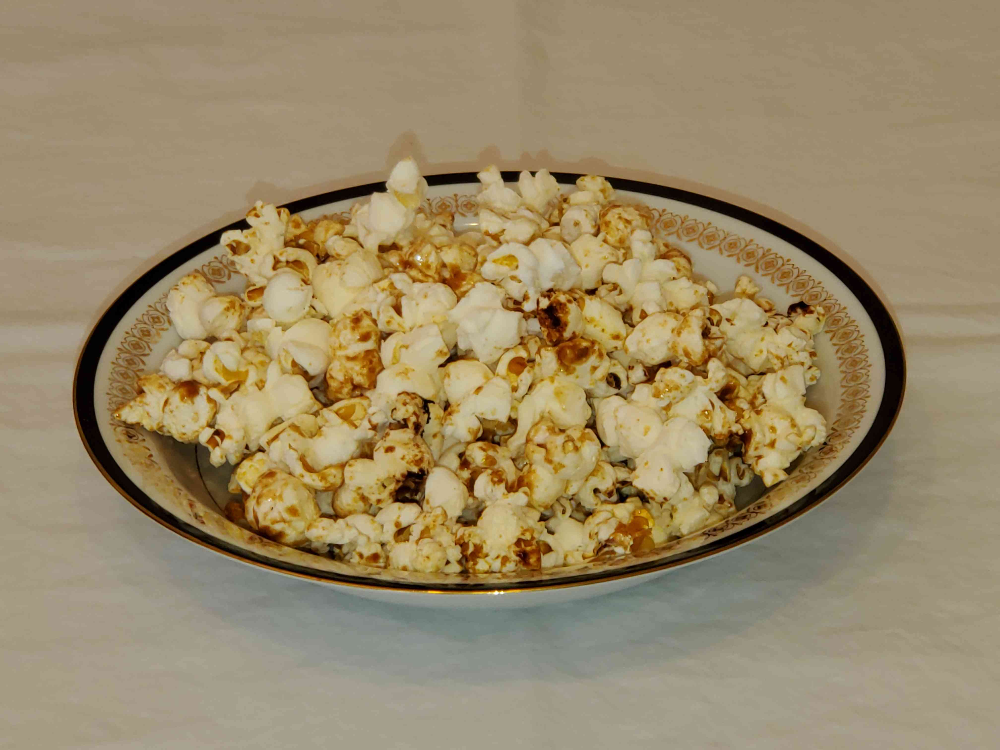

This is a recipe for "Stove-top Caramel Popcorn"
Ingredients
- One 5 QT. Stainless Steel Dutch Oven with a glass lid
- 3 Tbsp. of Peanut Oil
- 3 Tbsp. of butter
- 12 Werther’s Original Caramel Hard Candies
- ½ cup of Orville Redenbacher’s Original Popcorn kernels
Directions
- Put the Dutch Oven (DO) on the stove and set burner for medium high heat. After about 2 ½ minutes begin testing the temperature by dropping a small amount of water into the DO. When a drop of water forms a little ball that rolls around, the temperature is correct.
- Add the oil, and swirl it around to completely coat the bottom of the DO. This is how you make your stainless steel cookware non-stick.
- Add the butter and candies. Stir continuously with a wooden spoon until the candies have completely melted.
- Add the kernels. Stir to completely coat them and spread in one layer on the bottom of the DO. Put the lid on.
- Gently shake the DO every few seconds to prevent kernels from burning.
- When popping slows to several seconds between pops, remove the DO from the heat.
- Let the DO sit for a couple minutes before removing the lid.
- Pour the popcorn into serving bowls, and ENJOY.
Download Recipe